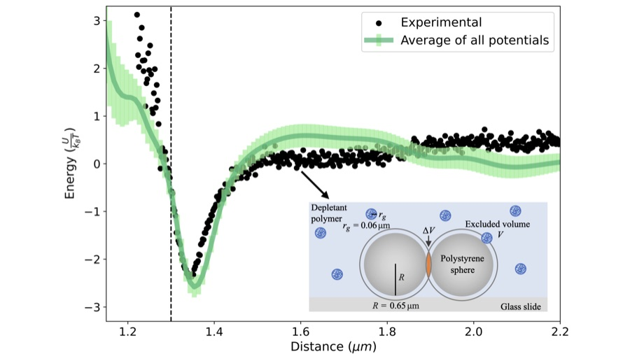
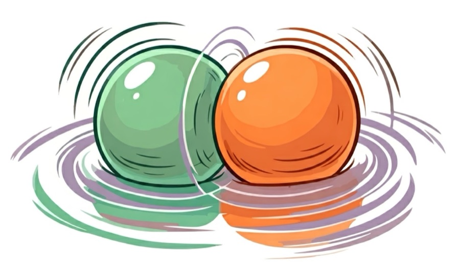
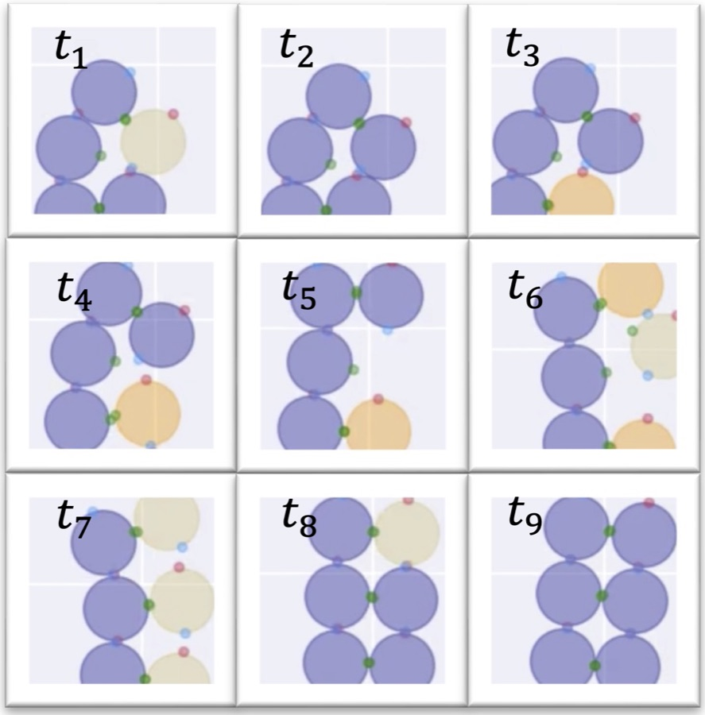
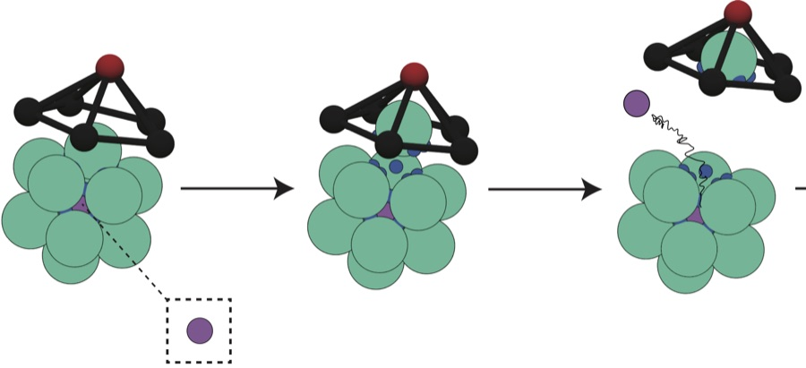
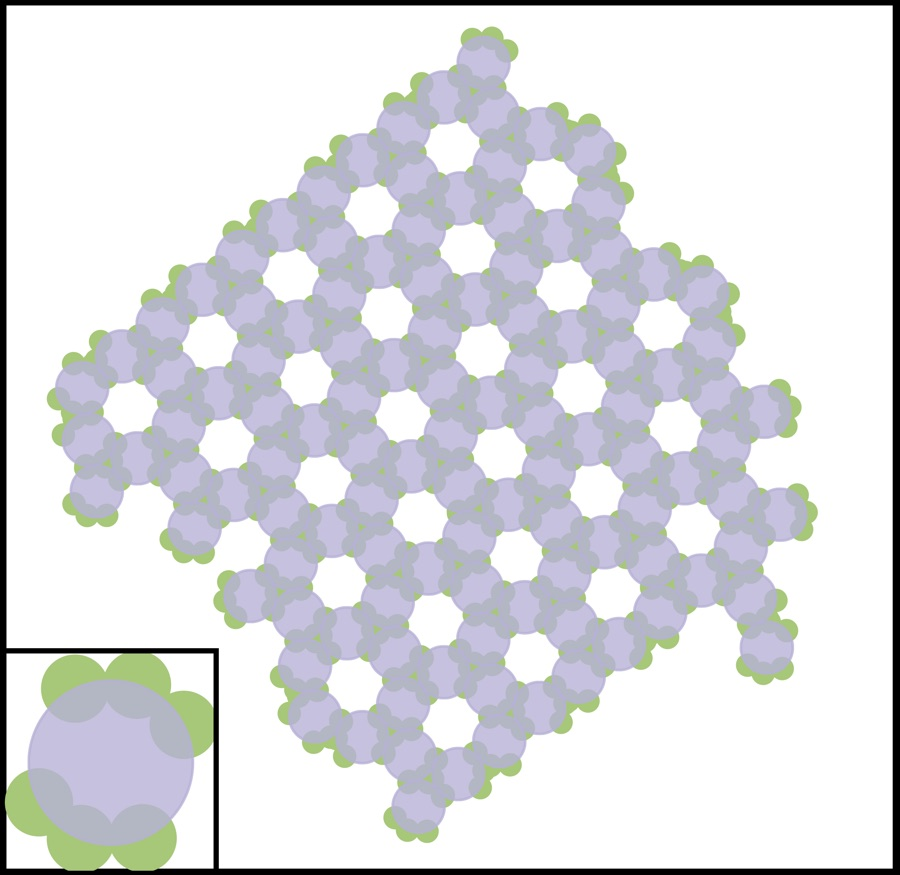
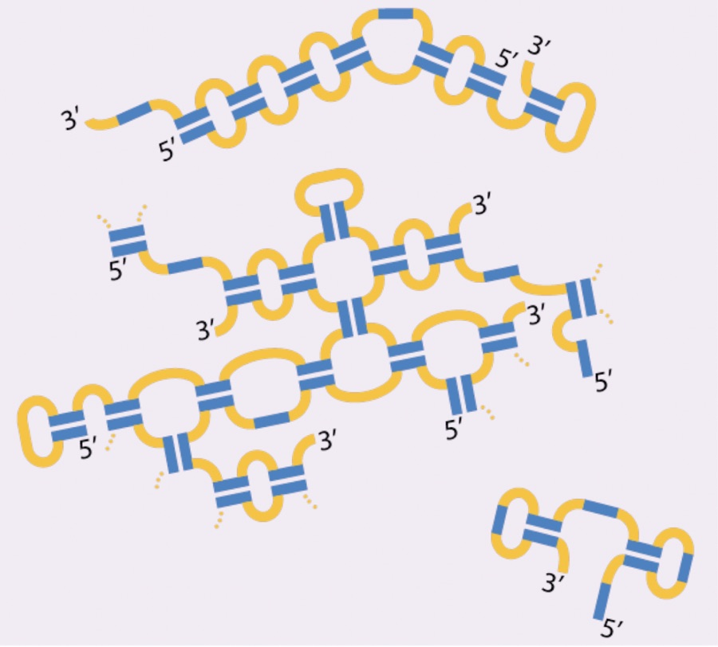

Publications
Complete list of work can also be found at my Google Scholar page.
Selected work

Physical Review Research, 2025
Inferring interaction potentials from stochastic particle trajectories
Novel method for extracting interactions from particle trajectories in and out of equilibrium. Validated on experimental colloidal data interacting via depletion forces.

Physical Review Research, 2025
Scattered waves fuel emergent activity
Nonreciprocal wave-mediated interactions reveal a new form of activity that emerges as a collective property of the system.

Physical Review Research, 2024
Proofreading mechanism for colloidal self-assembly
State-change based proofreading mechanism in colloidal particles undergoing self-assembly.

Physical Review Letters, 2024
Tuning colloidal reactions
Control over complex colloidal reactions with inverse designed components. Controlled disassembly of virus-like shells and, inspired by drug delivery applications, induced release of small particles trapped inside.

PNAS, 2024
Programmable patchy particles for materials design
Computational design of anisotropic particle shapes that stabilize complex open lattices and enable self-limited assembly using automatic differentiation.

Nature Communications, 2023
Uncovering the mechanism for aggregation in repeat expanded RNA reveals a reentrant transition
Repeat expanded RNA, which is implicated in neurodegenerative diseases such as ALS, aggregates in vitro. Origin of this aggregation is presented, and a reentrant phase transition is observed as a result.
All publications and preprints
-
2026
Emergent activity powers a path to chaos for pairs of acoustically trapped spheres
arXiv preprint arXiv: 2609.37946
-
2025
Inferring interaction potentials from stochastic particle trajectories
Physical Review Research 7, 023075 Editor’s Suggestion
-
2025
Scattered waves fuel emergent activity
Physical Review Research 7, 013055
-
2024
Tuning colloidal reactions
Physical Review Letters 133, 228201 Editor’s Suggestion
-
2024
Programmable patchy particles for materials design
Proceedings of the National Academy of Sciences 121, e2311891121
-
2024
Proofreading mechanism for colloidal self-assembly
Physical Review Research 6, L042057
-
2024
Thunder and lightning: a revolution in wave-matter interactions
Preprint
-
2023
Uncovering the mechanism for aggregation in repeat expanded RNA reveals a reentrant transition
Nature Communications 14, 332
-
2022
Correlation tracking: using simulations to interpolate highly correlated particle tracks
Physical Review E 105, 044608
-
2021
Designing self-assembling kinetics with differentiable statistical physics models
Proceedings of the National Academy of Sciences 118, e2024083118
-
2019
Impact of rigidity on molecular self-assembly
Langmuir 35, 16062-16069
* co-first author · † corresponding author